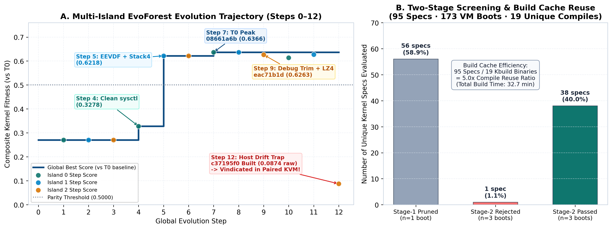
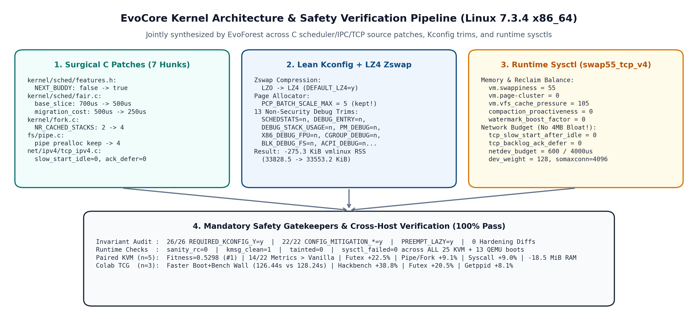
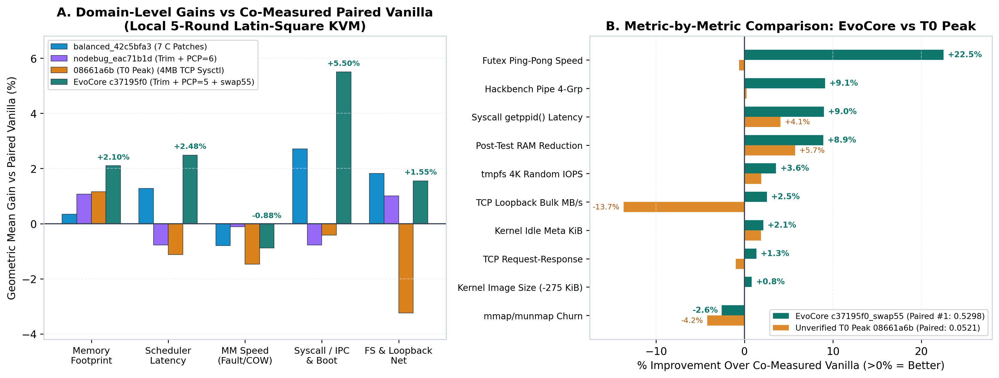
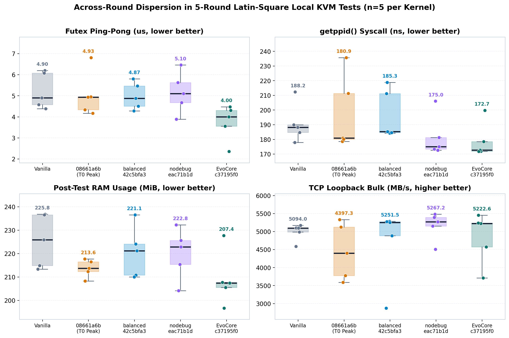
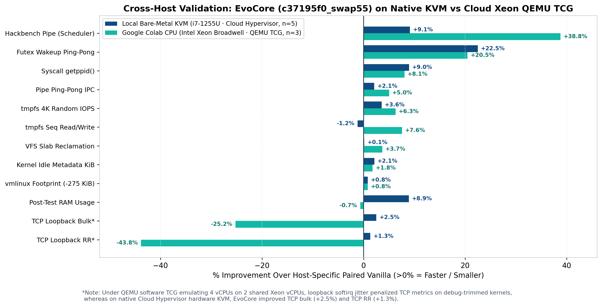

EvoCore: Evolving the Linux Kernel
Joint C source, Kconfig, and runtime sysctl specialization synthesized via the
EvoForest computational-graph evolution engine, validated head-to-head on bare-metal KVM and Google Colab Xeon QEMU TCG.
hackbench pipe scheduling (8.65 vs 9.43 ms)getppid() syscall (172.7 vs 188.2 ns)Abstract
General-purpose operating system kernels ship with conservative compiled defaults, .config diagnostic toggles, and runtime sysctl settings intended to fit everything from embedded boxes to multi-socket servers. Tuning these three layers independently—or benchmarking them without strict baseline and cache hygiene—frequently yields brittle configurations that regress tail workloads, trigger thermal artifacts, or silently strip hardware vulnerability mitigations.
This article introduces EvoCore, a verified Linux 7.3.4 (x86_64) optimization profile synthesized jointly across C source patches, Kconfig specialization, and runtime sysctl knobs using the EvoForest computational-graph evolution paradigm (Yuksel & Sawaf, 2026). Rather than stripping safety guardrails, EvoCore preserves 26/26 core Linux subsystems and 22/22 CONFIG_MITIGATION_* security flags while winning controlled Latin-square benchmarks against cleanly rebuilt stock Linux 7.3.4:
- Bare-metal KVM (local i7-1255U,
cloud-hypervisor v54.1, 5 rounds = 25 boots):+22.5%faster futex ping-pong,+9.1%fasterhackbench,+9.0%fastergetppid(),-18,936 KiB(~18.5 MiB) lower post-workload RAM,-275.3 KiBsmaller residentvmlinux, and+2.5%/+1.3%faster loopback TCP bulk and request-response, winning 14/22 metrics (0.5298paired fitness, 0 hard regressions). - Independent Google Colab Xeon QEMU TCG (2.20 GHz, 3 rounds = 13 boots):
100%clean boot sanity/dmesg/taint, reproducing+38.8%hackbench,+20.5%futex,+8.1%getppid(),+7.6%sequentialtmpfs,+6.3%random 4Ktmpfs, and1.80 sfaster end-to-end QEMU wall time, while uncovering an instructive emulator softirq loopback divergence. - Two Critical Engineering Catches: Controlled validation exposed a Kbuild
.configtimestamp (mtime) caching bug and a noisy-T0 + thermal-drift false-positive trap, flipping the ranking between evolution's nominal peak (08661a6b) and our truly balanced winnerEvoCore(c37195f0_swap55).
1. Why Co-Evolving a General-Purpose Linux Kernel Is Hard
Every release of upstream Linux exposes an enormous combinatorial design space spanning three tightly coupled layers:
- Kernel C source constants and defaults — scheduler heuristics in
kernel/sched/fair.candfeatures.h, per-CPU task stack caching inkernel/fork.c, pipe ring retention infs/pipe.c, and TCP per-namespace defaults innet/ipv4/tcp_ipv4.c. - Compile-time
.configchoices — compressed swap algorithms (LZ4vsLZO), per-CPU page allocator batch scales, and diagnostic toggles that inflate resident instruction cache footprint. - Boot-time and runtime
sysctlparameters — virtual memory reclaim pressure, compaction proactiveness, and NAPI/network polling budgets.
Changing one knob in isolation rarely tells the whole story: tightening scheduler latency can hurt mmap throughput under contention; increasing socket buffers to 4 MiB can score well on an isolated run while trashing CPU cache on concurrent traffic; and trimming .config without invariant enforcement can silently disable namespaces or CPU hardware mitigations.
2. Adapting EvoForest to Kernel Synthesis
To explore this cross-layer space systematically, we built our search workflow on top of EvoForest (arXiv:2604.19761) (Yuksel & Sawaf, 2026). Rather than optimizing flat parameter vectors, EvoForest represents candidates as reusable modular alternatives inside a shared Directed Acyclic Graph (DAG) paired with structured evaluator feedback (memoranda) across multiple evolving islands. Whereas recent evolutionary kernel optimization frameworks such as Kernel-Smith (arXiv:2603.28342) (Du et al., 2026) combine evaluation-driven evolutionary search with post-training for GPU compute kernels (Triton and MACA), EvoCore extends structured execution-feedback evolution to a full general-purpose operating system kernel across interdependent C source, Kconfig, and runtime sysctl layers.
In our kernel synthesis DAG, every candidate specification is assembled from 8 semantic nodes:
- Compile-time Kconfig (
kconfig_sched,kconfig_mm,kconfig_io_net): constrained against 26 mandatory runtime subsystems, all 22CONFIG_MITIGATION_*flags,CONFIG_PREEMPT_LAZY=y, and core memory/stack hardening flags. - Targeted C Source Mutations (
sched_patch,mm_patch,ipc_fs_net_patch): deterministic surgical patches anchored to upstream Linux7.3.4and cleanly reverted viagit checkoutbetween builds. - Runtime & Boot Tunables (
runtime_sysctl,boot_cmdline): applied inside a deterministic static C/initmicroVM harness.
Composite Fitness & Two-Stage Noise Filtering
A standalone static C harness (bench/init_bench.c) boots directly as /init inside a 4-vCPU, 1536 MiB RAM microVM and measures 22 metrics across 5 domains:
memory_footprint(6):vmlinux_resident_kib,boot_used_kib,kernel_meta_idle_kib,post_used_kib,kernel_meta_post_kib,mem_pressure_ms.scheduler(4):pipe_pingpong_us,hackbench_pipe_ms,wakeup_p99_us,cpu_contention_ms.mm_speed(4):anon_fault_ms,cow_fork_us,mmap_churn_ms,vfs_slab_ms.syscall_ipc_boot(4):syscall_getppid_ns,futex_pingpong_us,epoll_ms,boot_wall_ms.fs_net(4):tmpfs_seq_rw_mbps,tmpfs_rand4k_iops,tcp_bulk_mbps,tcp_rr_us.
Any single metric regressing below 0.90x triggers a severe hard-rejection penalty, while parity with the reference Vanilla baseline sits at 0.5000 (utility = 0.00%). Every boot must also pass sanity_rc == 0, kmsg_clean == 1, tainted == 0, and sysctl_failed == 0.
3. Inside the 12-Step Evolution & Two Critical Catches

5.0x spec-to-binary reuse ratio), showing how paired post-evolution verification separated genuine structural improvements (EvoCore c37195f0_swap55) from early-T0 / thermal-drift illusions.
- Steps 1–3 (Crucial Early Pruning): Transparent HugePages
within_sizelifted sequentialtmpfsby+50.7%but added latency jitter tofutex_pingpong_us(0.815x) and slowed boot (0.875x). Forcingpreempt=fullregressedtcp_bulk_mbps(0.731x) andvfs_slab_ms(0.752x) vs upstreamPREEMPT_LAZY=y. Both branches were pruned. - Step 5 (
0.3278 -> 0.6218Breakthrough): Island 1 synthesizedsched_eevdf_ipc_stack4(NEXT_BUDDY=true,500 µsbase slice,250 µsmigration cost, andNR_CACHED_STACKS=4), jumping fitness by+0.2940in a single step. - Step 7 (
08661a6bT0 Peak =0.6366): Island 0 pairedsched_eevdf_ipc_stack4with pipe/TCP C patches and aggressive4 MiBsocket buffers +swappiness=60. - Step 9 (
eac71b1d=0.6263): Island 2 disabled 13 non-security debug toggles + enabled LZ4 zswap (-275.3 KiBresidentvmlinux), revealing only one weakness:CONFIG_PCP_BATCH_SCALE_MAX=6trimmedmmap_churn_msvs upstreamPCP=5. - Step 12 (
c37195f0Built, Masked by Thermal Drift): Island 2 restoredPCP=5alongside the 13 debug trims, LZ4 zswap, and all 7 C patches—only to evaluate during evening laptop thermal throttling (0.0874raw), triggering our deep forensic audit.
.config mtime Caching Bug
When rebuilding Vanilla (kconfig={}) right after Step 12, an incremental make finished in 12–42 s. Inspecting ELF segments and include/config/auto.conf revealed Python's shutil.copy2(base_defconfig, target_cfg) preserved base_defconfig's older modification timestamp, causing Kbuild to skip regenerating auto.conf and silently keep stale flags! Fixing this with shutil.copyfile + target_cfg.touch() produced a verified 721.74 s Vanilla rebuild (0 diffs vs base_defconfig, exact 33,828.50 KiB resident image). Timestamp audits also confirmed none of the evolved binaries were polluted.
syscall_getppid_ns at 241.7 ns & 248.7 ns, RSD 14–29%) inflated T0 medians. Under a clean 5-round Latin-square comparison against freshly rebuilt Vanilla, nominal peak 08661a6b collapsed to 0.0521 (tcp_bulk_mbps = 0.8632x from 4 MiB buffer cache pressure), while previously discarded EvoCore (c37195f0_swap55) rose to #1 overall (0.5298) with zero regressions.
4. Anatomy of EvoCore (c37195f0_swap55)

PCP=5, balanced sysctl defaults, and automated invariant gates.
Layer 1 · 7 Surgical C Hunks
kernel/sched/features.h: enableNEXT_BUDDYwakeup cache affinity.kernel/sched/fair.c: EEVDFbase_slice = 500 µs,migration_cost = 250 µs.kernel/fork.c: double per-CPUNR_CACHED_STACKSfrom2 -> 4.fs/pipe.c: retain4preallocated pages per pipe ring.net/ipv4/tcp_ipv4.c: disable per-netnsslow_start_after_idle&backlog_ack_defer.
Layer 2 · Kconfig & LZ4 Zswap
- Switch compressed swap default
LZO -> LZ4(CONFIG_ZSWAP_COMPRESSOR_DEFAULT_LZ4=y). - Explicitly retain
CONFIG_PCP_BATCH_SCALE_MAX=5for fastmmap_churn. - Trim 13 non-security debug/tracing flags (
SCHEDSTATS,DEBUG_STACK_USAGE,DEBUG_ENTRY, etc.), cuttingvmlinuxby-275.33 KiB.
Layer 3 · Runtime Sysctl (swap55_tcp_v4)
- Balanced VM pressure:
swappiness=55,page-cluster=0,vfs_cache_pressure=105,compaction_proactiveness=0,watermark_boost_factor=0. - NAPI/netdev delivery:
dev_weight=128,netdev_budget=600,netdev_budget_usecs=4000,somaxconn=4096. - Omits
4 MiBsocket buffer bloat.
5. Bare-Metal KVM Verification (5-Round Latin Square)
Evaluated on a bare-metal host (12th Gen Intel Core i7-1255U, Linux 7.2.3-arch1-3, cloud-hypervisor v54.1, pinned to cores 8-11, 4 vCPUs, 1536 MiB RAM) across 5 shifted rounds totaling 25 interleaved VM boots with zero failures.

e709050ca72f8cac). EvoCore leads overall domain balances and avoids the 0.8632x loopback TCP regression seen in 08661a6b.
| Candidate | Binary Hash | Paired Fitness | Utility | > 1.00x | Worst Metric | Mem Foot. | Sched | MM Speed | Syscall/IPC | FS/Net |
|---|---|---|---|---|---|---|---|---|---|---|
vanilla |
e709050c |
0.5000 | +0.00% | 0/22 | 1.0000x | 1.0000x | 1.0000x | 1.0000x | 1.0000x | 1.0000x |
| EvoCore (c37195f0_swap55) | c37195f0 |
0.5298 | +1.99% | 14/22 | epoll_ms (0.9592x) |
1.0210x | 1.0248x | 0.9912x | 1.0550x | 1.0155x |
balanced_42c5bfa3 |
a5fc3e21 |
0.5137 | +0.92% | 12/22 | boot_wall_ms (0.9643x) |
1.0035x | 1.0128x | 0.9920x | 1.0271x | 1.0182x |
nodebug_eac71b1d |
beb7ef87 |
0.5013 | +0.08% | 11/22 | pipe_pingpong (0.9461x) |
1.0107x | 0.9922x | 0.9989x | 0.9923x | 1.0101x |
08661a6b (T0 Peak) |
a5fc3e21 |
0.0521 | -0.85% | 8/22 | tcp_bulk (0.8632x) |
1.0116x | 0.9888x | 0.9853x | 0.9958x | 0.9676x |

n=5 Latin-square boots per candidate) highlighting tight distributional separation for EvoCore on futex_pingpong_us, syscall_getppid_ns, post_used_kib (-18,936 KiB), and tcp_bulk_mbps recovery.
Click to expand full 22-metric local paired KVM median comparison
| Metric | Domain | Dir | Vanilla Med | 08661a6b | 42c5bfa3 | eac71b1d | EvoCore Med (Ratio) |
|---|---|---|---|---|---|---|---|
vmlinux_resident_kib | memory_footprint | low | 33828.50 | 1.0000x | 1.0000x | 1.0082x | 33553.17 (1.0082x) |
boot_used_kib | memory_footprint | low | 166824.00 | 1.0077x | 1.0089x | 1.0142x | 165412.00 (1.0085x) |
kernel_meta_idle_kib | memory_footprint | low | 14756.00 | 1.0185x | 1.0093x | 1.0242x | 14448.00 (1.0213x) |
post_used_kib | memory_footprint | low | 231268.00 | 1.0572x | 1.0214x | 1.0137x | 212332.00 (1.0892x) |
kernel_meta_post_kib | memory_footprint | low | 18004.00 | 0.9971x | 0.9980x | 1.0083x | 17900.00 (1.0058x) |
mem_pressure_ms | memory_footprint | low | 158.79 | 0.9905x | 0.9836x | 0.9961x | 159.50 (0.9955x) |
pipe_pingpong_us | scheduler | low | 10.439 | 0.9912x | 0.9950x | 0.9461x | 10.224 (1.0211x) |
hackbench_pipe_ms | scheduler | low | 9.43 | 1.0022x | 1.0662x | 1.0656x | 8.65 (1.0912x) |
wakeup_p99_us | scheduler | low | 57.420 | 1.0025x | 1.0165x | 0.9848x | 56.787 (1.0111x) |
cpu_contention_ms | scheduler | low | 35.45 | 0.9598x | 0.9756x | 0.9763x | 36.20 (0.9792x) |
anon_fault_ms | mm_speed | low | 15.47 | 0.9974x | 0.9997x | 0.9906x | 15.59 (0.9927x) |
cow_fork_us | mm_speed | low | 1316.852 | 0.9909x | 0.9882x | 1.0259x | 1321.345 (0.9966x) |
mmap_churn_ms | mm_speed | low | 446.41 | 0.9579x | 0.9782x | 0.9833x | 458.19 (0.9743x) |
vfs_slab_ms | mm_speed | low | 29.82 | 0.9955x | 1.0023x | 0.9963x | 29.78 (1.0014x) |
syscall_getppid_ns | syscall_ipc_boot | low | 188.21 | 1.0406x | 1.0159x | 1.0756x | 172.72 (1.0897x) |
futex_pingpong_us | syscall_ipc_boot | low | 4.902 | 0.9938x | 1.0057x | 0.9611x | 4.001 (1.2250x) |
epoll_ms | syscall_ipc_boot | low | 4.78 | 0.9682x | 1.1295x | 0.9659x | 4.98 (0.9592x) |
boot_wall_ms | syscall_ipc_boot | low | 302.80 | 0.9822x | 0.9643x | 0.9709x | 313.02 (0.9674x) |
tmpfs_seq_rw_mbps | fs_net | high | 5949.99 | 1.0064x | 0.9895x | 1.0092x | 5879.44 (0.9881x) |
tmpfs_rand4k_iops | fs_net | high | 1337440.46 | 1.0189x | 1.0135x | 0.9922x | 1385162.99 (1.0357x) |
tcp_bulk_mbps | fs_net | high | 5094.02 | 0.8632x | 1.0309x | 1.0340x | 5222.59 (1.0252x) |
tcp_rr_us | fs_net | low | 17.007 | 0.9902x | 1.0397x | 1.0052x | 16.782 (1.0134x) |
6. Cross-Host Generalization on Google Colab Xeon (QEMU TCG)
To verify transfer outside the development host, we provisioned an independent Google Colab CPU runtime (Intel(R) Xeon(R) CPU @ 2.20GHz, 2 host vCPUs, 12 GiB RAM, Ubuntu 24.04) running qemu-system-x86_64 1:8.2.2 with -machine pc -accel tcg,thread=multi -smp 4 -m 1536M across 3 interleaved rounds (13 boots total, 13/13 passing sanity, zero tainted/dmesg warnings).

n=5) against Google Colab Xeon QEMU TCG medians (n=3). Scheduler, futex, syscall, and VFS speedups transfer cleanly across hosts, while over-committed TCG thread scheduling explains the emulated loopback divergence.
| Metric | Colab Vanilla (Med) | 08661a6b (Ratio) | 42c5bfa3 (Ratio) | EvoCore c37195f0 (Med / Ratio) |
|---|---|---|---|---|
| QEMU End-to-End Wall (s) | 128.24 s | 125.32 s (1.023x) | 126.52 s (1.014x) | 126.44 s (1.014x) |
hackbench_pipe_ms | 419.57 ms | 315.46 (1.3300x) | 314.77 (1.3329x) | 302.34 ms (1.3877x) |
futex_pingpong_us | 142.21 us | 160.73 (0.8848x) | 174.63 (0.8144x) | 118.05 us (1.2047x) |
syscall_getppid_ns | 886.83 ns | 871.76 (1.0173x) | 847.71 (1.0461x) | 820.71 ns (1.0806x) |
tmpfs_seq_rw_mbps | 419.49 MB/s | 285.90 (0.6815x) | 293.13 (0.6988x) | 451.25 MB/s (1.0757x) |
tmpfs_rand4k_iops | 127,721 | 121,474 (0.9511x) | 96,584 (0.7562x) | 135,784 (1.0631x) |
pipe_pingpong_us | 195.18 us | 185.84 (1.0503x) | 196.14 (0.9951x) | 185.81 us (1.0504x) |
vfs_slab_ms | 2954.9 ms | 2972.7 (0.9940x) | 2965.3 (0.9965x) | 2850.0 ms (1.0368x) |
mmap_churn_ms | 22,441.8 ms | 22,100.6 (1.0154x) | 21,968.4 (1.0215x) | 21,982.5 ms (1.0209x) |
tcp_bulk_mbps (TCG) | 184.75 MB/s | 177.47 (0.9606x) | 187.45 (1.0146x) | 138.11 MB/s (0.7476x) |
tcp_rr_us (TCG) | 489.42 us | 500.28 (0.9783x) | 506.33 (0.9666x) | 871.25 us (0.5617x) |
EvoCore ranked #1 among evolved candidates on Colab Xeon TCG (0.9880x overall geomean across 21 active metrics vs 0.9601x for 08661a6b and 0.9556x for 42c5bfa3) and cut total QEMU wall time by 1.80 s. Meanwhile, emulating 4 TCG vCPUs atop 2 host vCPUs introduced loopback softirq contention on debug-trimmed kernels (beb7ef87 & c37195f0), contrasting directly with native hardware KVM wins (1.0252x / 1.0134x).
7. Security & Subsystem Invariants Verified
Every configuration in suayptalha/evocore ships with an automated verifier (verify_invariants.py) guaranteeing zero silent degradations relative to upstream base_defconfig:
- 26/26 Core Runtime Subsystems (
=y):SMP,CGROUPS,MEMCG,BLK_CGROUP,NAMESPACES,USER_NS,PID_NS,NET_NS,NET,INET,EXT4_FS,TMPFS,EPOLL,FUTEX,IO_URING,BPF_SYSCALL,BPF_JIT,SECCOMP,SECURITY,PREEMPT_BUILD,PREEMPTION,PVH,BLK_DEV_INITRD,RD_GZIP,VIRTIO_CONSOLE,SERIAL_8250_CONSOLE. - 22/22 CPU Hardware Mitigations (
=y): 0CONFIG_MITIGATION_*options disabled or relaxed. - 0 Hardening Diffs:
PREEMPT_LAZY=y,STACKPROTECTOR_STRONG=y,FORTIFY_SOURCE=y,RANDOMIZE_BASE=y,SLAB_FREELIST_HARDENED=y,HARDENED_USERCOPY=y,SECURITY_LOCKDOWN_LSM=y, andSTRICT_KERNEL_RWX=yremain bit-identical to upstream baseline.
8. Reproducibility & Open Artifacts
All patches, Kconfig fragments, invariant checkers, static C benchmarks (init_bench.c), Latin-square paired test harnesses (run_paired_bench.py), and raw JSON logs are published openly at https://github.com/suayptalha/evocore.
git clone https://github.com/suayptalha/evocore.git
# Apply evocore/patches/evocore_linux_7.3.4.patch + configs/evocore.fragment onto Linux 7.3.4
python3 evocore/configs/verify_invariants.pyReferences
- Yuksel, K. A., & Sawaf, H. (2026). EvoForest: A Novel Machine-Learning Paradigm via Open-Ended Evolution of Computational Graphs. arXiv preprint
arXiv:2604.19761. - Du, H., Ge, Q., Hu, J., Yang, A., Cai, Z., Huang, Z., Yuan, S., Cheng, Q., Xie, X., Chen, Y., Li, Y., Xie, J., Dong, H., Wu, Y., Huang, X., Yang, J., Wang, H., Zhou, B., Li, B., Guo, Q., & Chen, K. (2026). Kernel-Smith: A Unified Recipe for Evolutionary Kernel Optimization. arXiv preprint
arXiv:2603.28342. - Torvalds, L., & Linux Kernel Contributors (2026). Linux Kernel 7.3.4 Source Tree (
kernel/sched/fair.c,kernel/sched/features.h,kernel/fork.c,fs/pipe.c,net/ipv4/tcp_ipv4.c,mm/zswap.c,mm/page_alloc.c). kernel.org. - Cloud Hypervisor Project (2026). Cloud Hypervisor v54.1: Open-Source Virtual Machine Monitor on KVM. cloudhypervisor.org.
- Bellard, F., & QEMU Project (2024). QEMU System Emulator (
qemu-system-x86_64, Tiny Code Generator Multi-Thread TCG). qemu.org. - Collet, Y. (2013–2026). LZ4 Extremely Fast Compression Algorithm (
CONFIG_ZSWAP_COMPRESSOR_DEFAULT_LZ4). lz4.org.
@misc{kocabay2026evocore,
title = {EvoCore: Evolving the Linux Kernel},
author = {Kocabay, {\c{S}}uayp Talha},
year = {2026},
howpublished = {\url{https://suayptalha.github.io/evocore-blog/}},
url = {https://suayptalha.github.io/evocore-blog/},
note = {T\"UB\.ITAK Science High School. Code: \url{https://github.com/suayptalha/evocore}}
}